A concept exploration into financial clarity, emotional engagement, and the future of travel-centred money management.
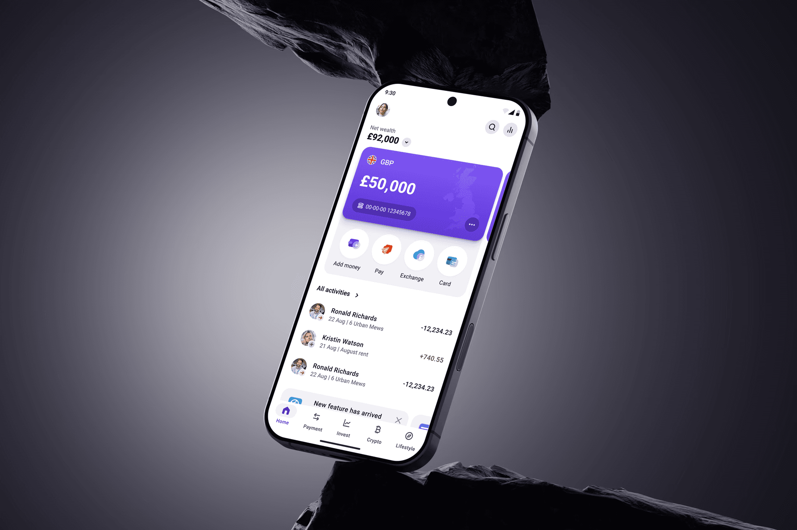
The prompt was simple: Revolut's home experience lacks visual engagement. Redesign it.
But the more I looked at the screen, the more I realised the problem wasn't just visual. It was structural. The home screen was trying to be everything — balance, navigation, promotions, quick actions — without being particularly good at any of them.
So I started from scratch. Not with Figma, but with observation.
A heuristic review of the current home screen revealed a consistent pattern: the interface prioritises density over clarity.
Balance figures lack visual prominence. Income and expenses are rendered in the same colour, making them indistinguishable at a glance. Key actions — including currency exchange — are buried behind a label that simply says "More." A promotional card sits in the middle of the screen, uninvited.
The dark tone, which should feel premium, instead feels heavy. The kind of interface you use, but don't enjoy.
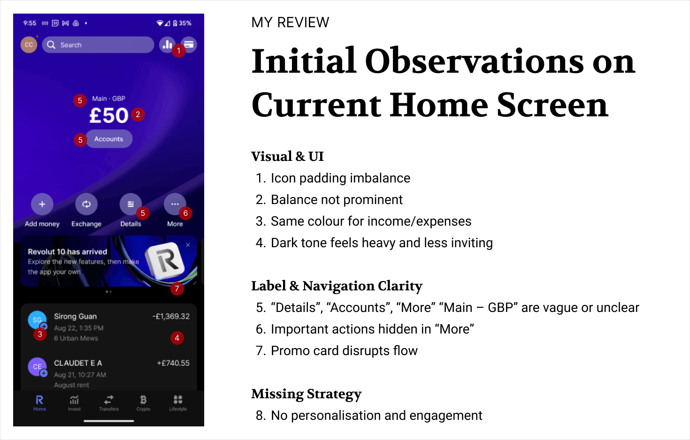
I conducted desk research alongside five user interviews to pressure-test whether these were real frictions or designer sensitivities. They were real. Three themes emerged consistently:
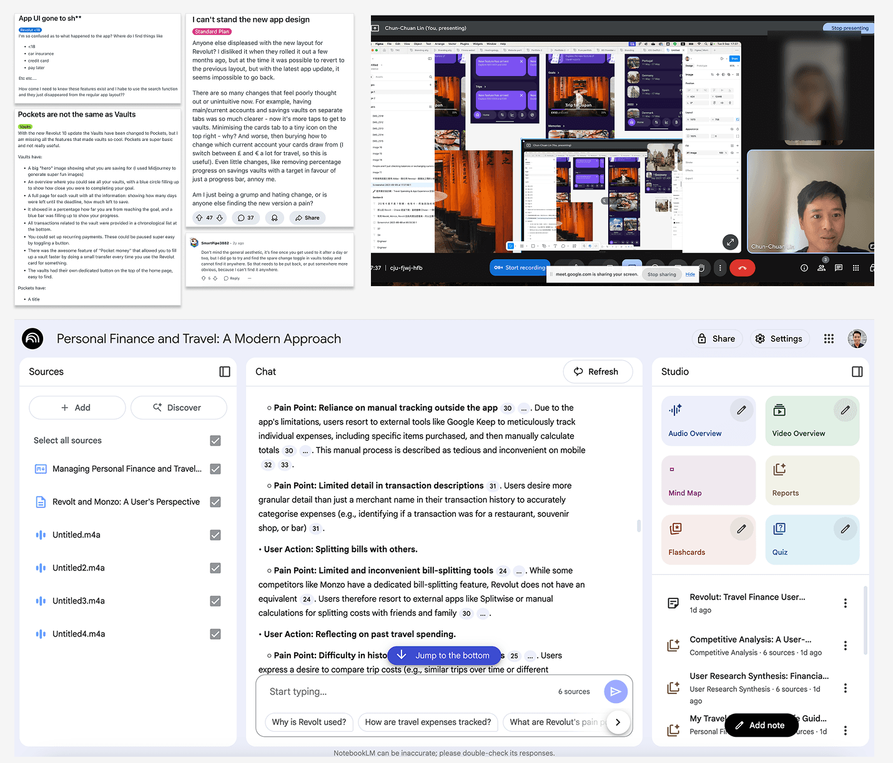
“I want to know if the current rate is high or low and when I exchanged before, but the chart is hidden inside.”
Female data analyst, 29
“Vaults now take more taps to reach, and card settings are buried behind a tiny icon. Switching between £ and € is no longer quick.”
A user from Reddit
“Design’s personal, but this feels plain. Moneybox’s fox is friendly, Monzo’s bold colours vibrant. Revolut wins on product, not design.”
Female accountant, 34

“I keep receipts and match them to transactions. But the Google Keep doesn’t help me sum it up.”
Male engineer, 35
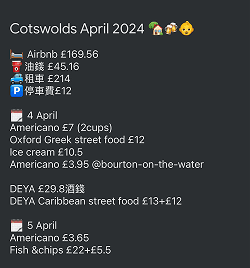
That last one stayed with me.
Competitor analysis reinforced the gap. Leading neobanks are moving toward personalised, goal-oriented home experiences — clear action hierarchies, welcoming visual tones, and light guidance for saving and exchange.
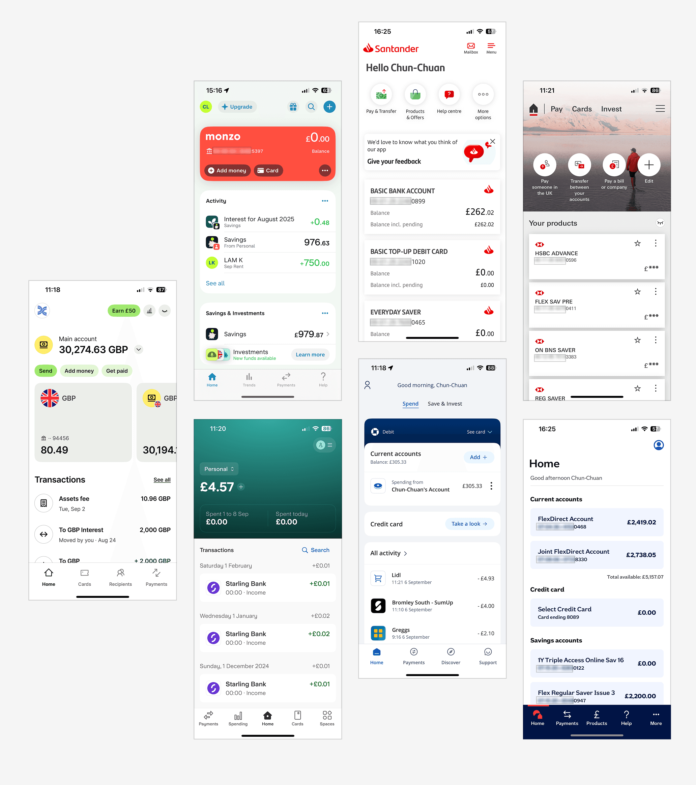
Almost every time users described a moment of genuine engagement with their finances, the context was the same: they were travelling.
Travel is when people spend the most, feel the most, and want to understand their money the most. Yet the current app treats a tea ceremony in Kyoto and a Netflix subscription with identical visual weight. There is no memory. No narrative. No sense that the app knows what the money meant.
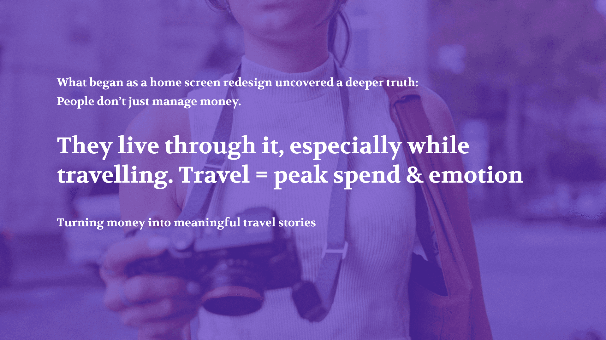
That realisation opened up three distinct design directions — each asking a different question about what a home screen is really for.
Rather than converging on a single solution, I explored three levels of ambition — from pragmatic to speculative — to demonstrate a range of strategic and creative thinking.
Practical Enhancements
The first direction asks a deliberately constrained question: what is the minimum set of changes that would make this experience meaningfully better — without requiring a redesign mandate or new engineering infrastructure?
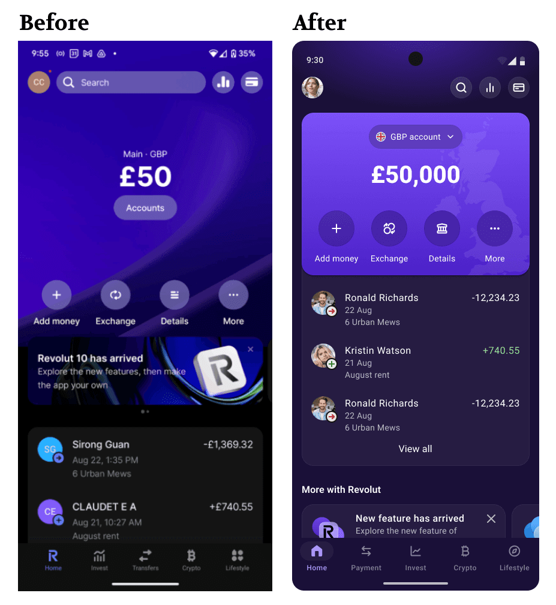
The changes are surgical but impactful:
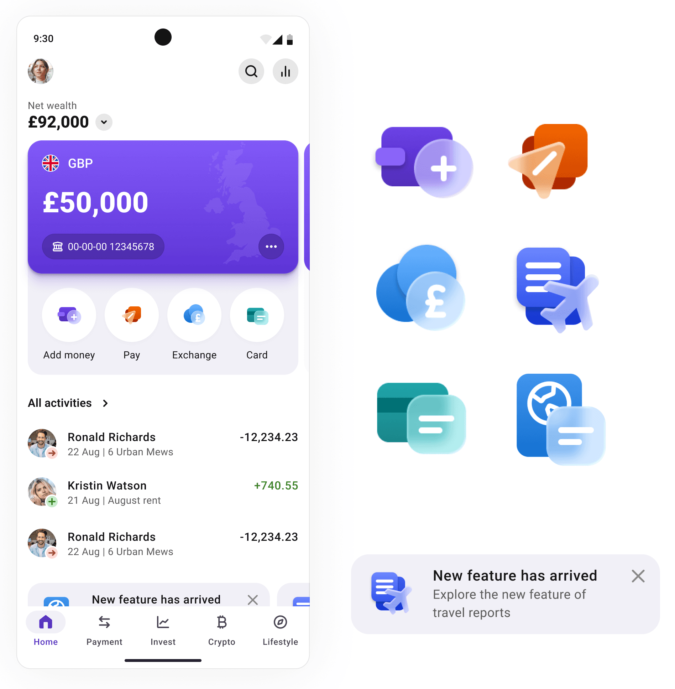
An iterative pass on V1 introduced a clearer wealth overview with top-level net worth, key actions surfaced for quicker access, and a light mode to improve contrast and daytime readability.
Version 3 is not a UI refresh. It is a strategic response to an unmet user need: the desire to understand money in context — specifically, the context of lived experience.
Travel is that context. It is when financial behaviour is most active, most emotionally charged, and most in need of guidance. Yet no major neobank has designed for this moment in a meaningful, end-to-end way.
Designing for travel, memories, and meaning
Travel isn’t just a cost — it’s an experience worth remembering, planning, and learning from.
Your money, your story — all in one place.
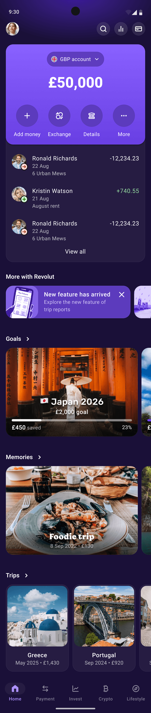
Every journey, worth remembering.
A trip isn't just a series of transactions — it's a story with a beginning, a middle, and a budget. The trip view turns spending data into a visual narrative: where you went, what you spent, and what made it worth it.
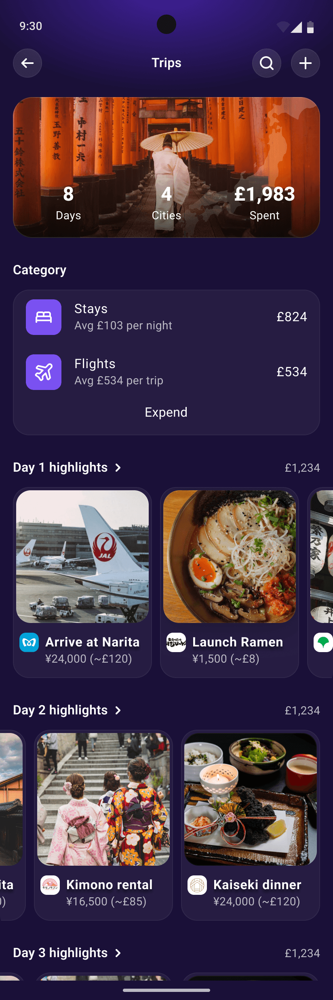
To make the concept tangible, I mapped a single user — Lena — across the full lifecycle of a trip. The scenario is not a persona exercise. It is a design stress-test: does each feature earn its place at each stage of the journey?
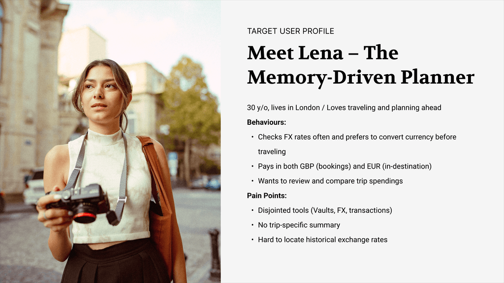
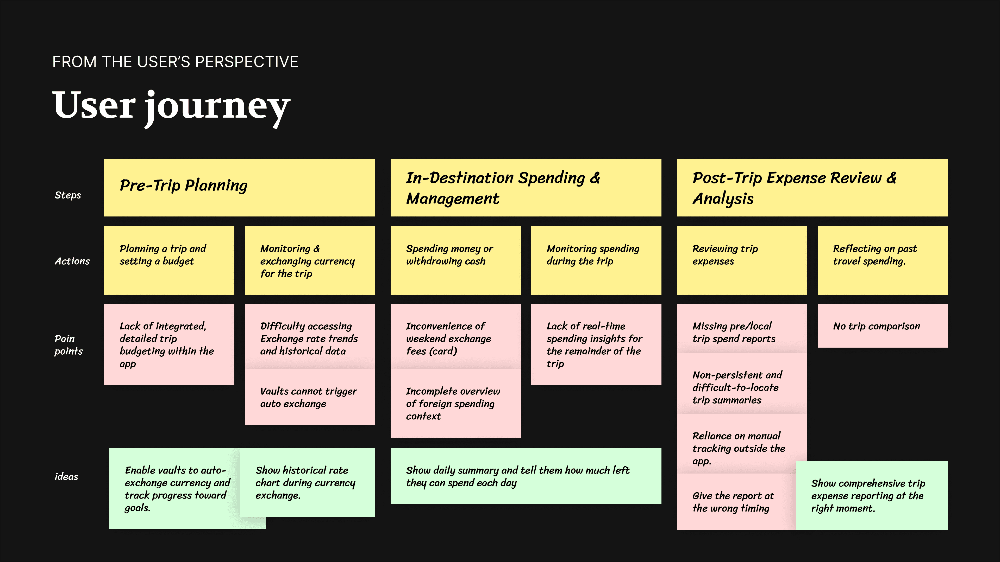
Lena is planning her next adventure — 8 days in Japan. She opens the app and sets up a new goal: 🇯🇵 "Japan 2026 · £2,000". She links her Vault to this goal and turns on Auto Exchange. While browsing flights, she sees a notification: “JPY is 5% cheaper than last month. Want to convert £500 now?” She locks it in with one tap. The app adds it to her Japan Travel.
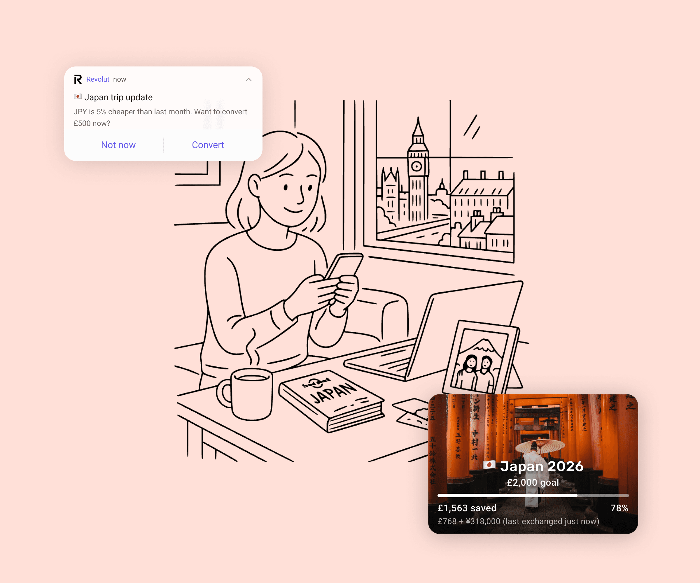
She gets a daily summary every morning: “Yesterday: ¥8,250 spent. You have ¥318,000 left, about ¥53,000/day.” She also adds a note and photo to one large transaction: 🍵 “Kyoto Tea Ceremony - peaceful and unforgettable.” The app saves it as a Memory Moment.
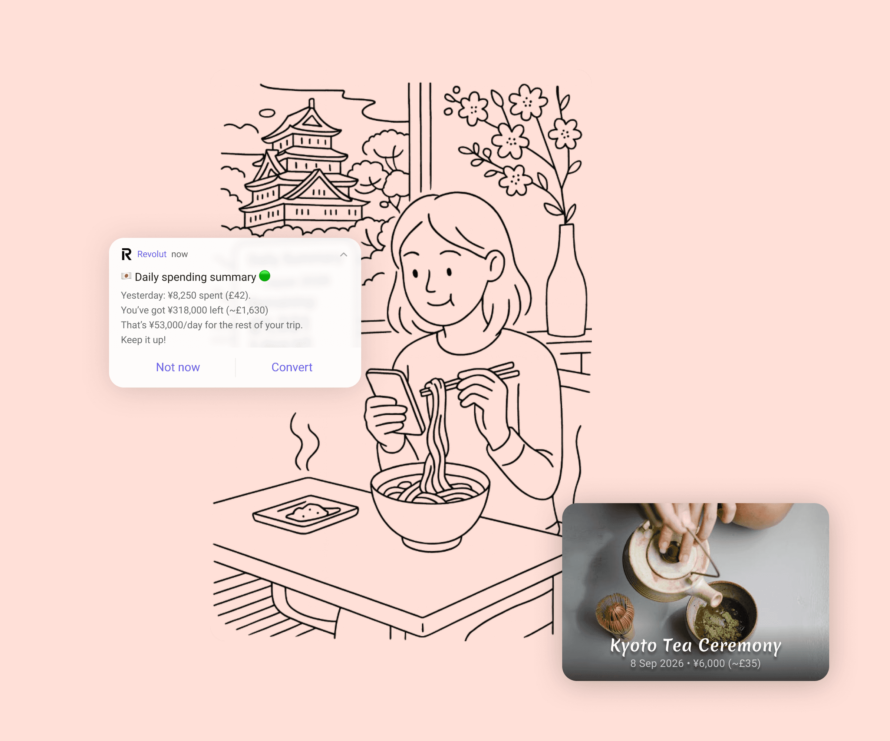
Lena arrives back in London. A few days later, the app notifies her: “Your trip to Japan cost £1,983 across 21 transactions. Want to relive it?” She opens a visual report with tagged expenses, photos, and a chart comparing her budget vs actual spend. She shares the summary with her friends when someone asks, “How much did you spend?”
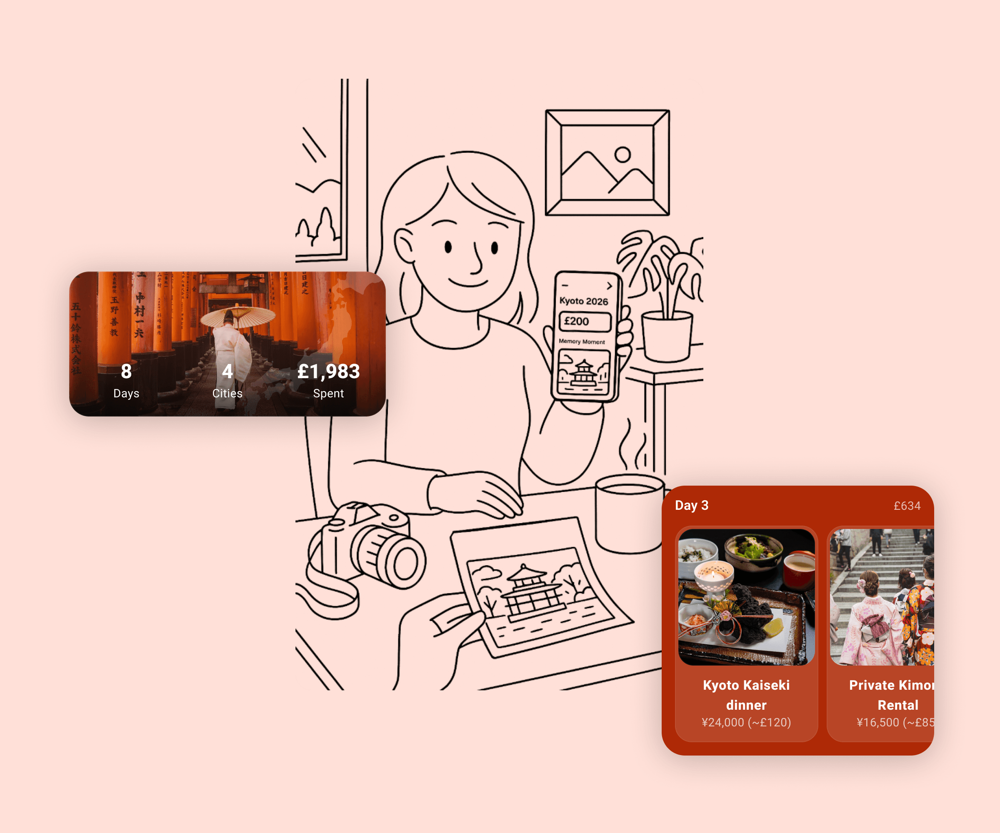
Later, the app reminds her: “Half a year since Japan. Ready to start your next chapter? Start saving for Korea now while flights are still low.” She taps "Yes", names it: "Korea 2027", and begins saving again.
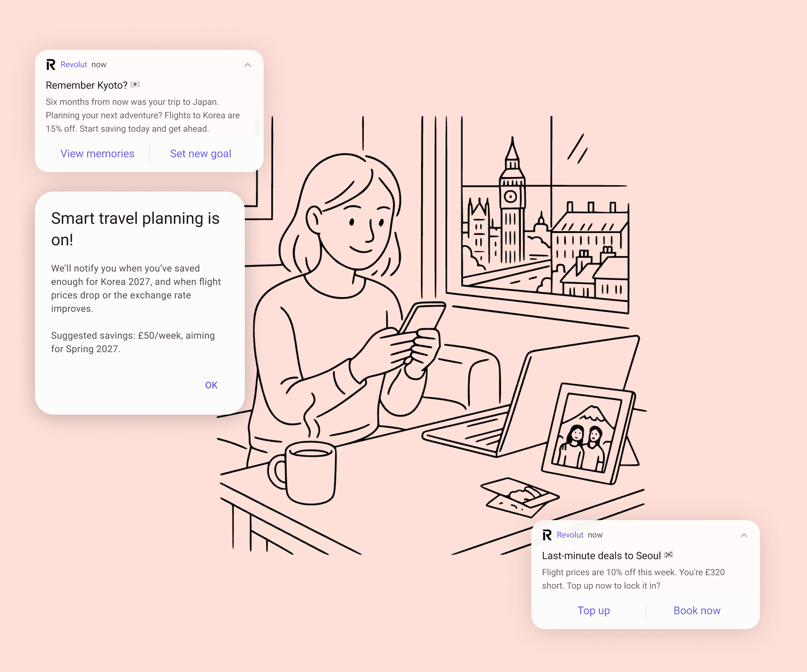
Version 3 is not just a UI concept. It is a response to three business risks that a purely cosmetic redesign would not address.
The design responds directly: V1 and V2 address clarity and discoverability. V3 addresses emotional connection, savings motivation, and long-term retention through a travel-centred life layer.
This is a concept project. Version 3 is not a product spec — it is a provocation. An attempt to explore what financial software could feel like when it respects not just your budget, but your experiences.
The research conducted — 5 user interviews and desk research — is directionally useful but not statistically significant. The design decisions are grounded in observable patterns, not validated through usability testing.
Good UX doesn't just guide — it empowers and connects.